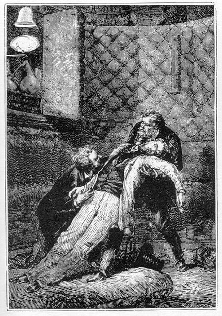
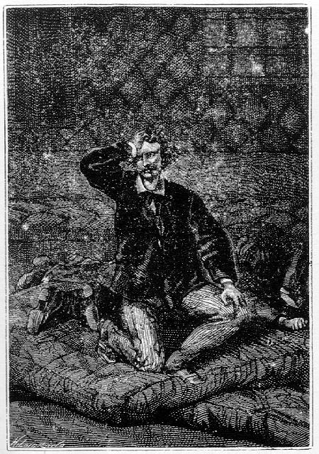
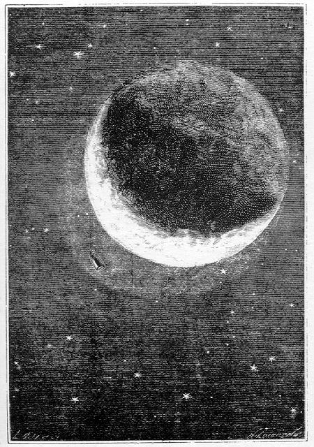

Capítol II
LA PRIMERA MITJA HORA
Què havia passat? ¿Quin efecte havia produït aquella espantosa sotragada? El talent dels constructors del projectil, havia aconseguit un resultat satisfactori? ¿S'havia esmorteït el xoc mercès als ressorts, als quatre topalls, als coixins d'aigua i als envans corredissos? ¿S'havia dominat l'espantosa arrencada d'aquella velocitat inicial d'onze mil metres i que era prou per a travessar París o Nova York en un segon? Aquestes eren evidentment les preguntes que es feien els mil testimonis d'aquella commovedora escena. Oblidaven el fi del viatge per pensar només en els viatgers! I si algú d'entre ells -J.-T. Maston, per exemple - hagués pogut donar una ullada a l'interior del projectil, què hi hauria vist?

Alçaren en Barbicane
Res aleshores. La foscor era profunda dins la bala. Però les seves parets
cilindrocòniques havien resistit magníficament. Ni una esquerda,
ni una flexió, ni una deformació. L'admirable projectil no s'havia
alterat gens ni mica sota la intensa deflagració de la pólvora,
ni liquat, com es temia, en una pluja d'alumini.
A l'interior, ben poc desordre. Alguns objectes havien estat engegats violentament
cap al sostre; però els més importants no semblaven haver sofert
el xoc. Llurs llibantons romanien intactes.
Damunt el disc movible, abaixat fins al fons, després d'haver-se desprès
dels envans i de l'escapament d'aigua, tres cossos romanien sense moviment.
Barbicane, Nicholl i Miquel Ardan, respiraven encara? ¿o bé aquell
projectil no era més que un fèretre de metall emportant-se tres
cadàvers per l'espai...?
Pocs minuts després d'haver partit la bala de canó, un dels cossos
féu un moviment; els seus braços es mogueren, el seu cap s'aixecà
i va arribar a posar-se de genolls. Era Miquel Ardan. Va palpar-se, féu
un "ep!" sonor i després es digué:
-En Miquel Ardan està sencer. Anem a veure als altres!

El coratjós francès
El coratjós
francès volgué aixecar-se, però no pogué restar
dempeus. El seu cap vacil·lava, la seva sang violentament injectada l'encegava,
estava com un home embriagat.
-Brrr! - féu -. Això em fa el mateix efecte que dues botelles
de Corton. Solament que potser és menys agradable d'engolir!
Després, passant-se diverses vegades la mà pel front i fregant-se
els polsos, cridà amb veu ferma:
-Nicholl! Barbicane!
Va esperar ansiosament. Cap resposta. Ni un sospir que indiqués que el
cor dels seus companys bategava encara. Va repetir el crit. El mateix silenci.
-Diable! - digué -. Sembla que hagin caigut de cap des d'un cinquè
pis! Vaja - afegí amb aquella impertorbable confiança que res
no podia contenir -, si un francès ha pogut posar-se de genolls, dos
americans no estaran impedits per a posar-se dempeus. Però, abans de
tot, procurem aclarir la situació.
Ardan sentia que la vida li revenia a glopades. La seva sang es calmava i reprenia
l'acostumava circulació. Nous esforços li tornaren l'equilibri.
Va arribar a aixecar-se, es tragué de la butxaca un llumí i féu
foc. Després, apropant-lo al bec de gas, l'encengué. El recipient
no havia sofert gens. El gas no s'havia escapat. A més, la seva olor
l'hauria traït, i en aquest cas Miquel Ardan no hauria pas apropat impunement
un llumí encès en aquell ambient carregat d'hidrogen. El gas,
combinat amb l'aire, hauria produït una mescla detonant i l'explosió
hauria acabat amb el que tal volta havia començat la sotragada.
Així que el bec fou encès, Ardan va inclinar-se damunt el cos
dels seus amics. Aquells cossos estaven boca enlaire l'un sobre l'altre, com
unes masses inertes. Nicholl al damunt i Barbicane al dessota.
Ardan aixecà el capità, el va recolzar contra un divan i va fregar-lo
amb vigor. Aquell massatge, intel·ligentment practicat, va reanimar Nicholl,
que, obrint els ulls, va recobrar instantàniament la seva sang freda
tot prenent la mà d'Ardan. Després, esguardant al seu voltant,
va preguntar:
-I Barbicane?
-Cadascú al seu torn - respongué tranquil·lament Miquel
Ardan -. He començat per tu, Nicholl, perquè estaves al damunt.
Anem, ara, per Barbicane.
I, dit això, Ardan i Nicholl aixecaren el president del Gun-Club i el
col·locaren damunt el divan. Barbicane semblava haver sofert més
que els seus companys. La seva sang havia rajat, però Nicholl va tranquil·litzar-se
en comprovar que aquella hemorràgia no provenia més que d'una
lleugera ferida a l'esquena. Una petita escorxadura que ell va comprimir curosament.
Malgrat tot, Barbicane va tardar un cert temps a revenir, cosa que féu
que s'espantessin els seus dos amics, que no li estalviaven pas les friccions.
-Encara respira - deia Nicholl, apropant l'orella al pit del ferit.
-Sí - responia Ardan -, respira com un home que té una mica aquest
costum de practicar-ho cada dia. Freguem, Nicholl, freguem amb vigoria.
I els dos improvisats practicants ho feren tan i tan bé, que Barbicane
va recobrar l'ús dels sentits. Obrí els ulls, va aixecar-se, prengué
la mà dels seus amics i com a primera paraula:
-Nicholl - preguntà - marxem?
Nicholl i Ardan es guaitaren. No s'havien preocupat encara del projectil. Llur
primera ocupació havia estat pels viatgers i no pel vagó.
-De fet, marxem? - repetí Miquel Ardan.
-¿O bé reposem tranquil·lament en terres de la Florida?
- demanà Nicholl.
-O al fons del golf de Mèxic? - afegí Miquel Ardan.
-Aquesta ens caldria! - cridà el president Barbicane.
I la doble hipòtesi suggerida pels seus companys tingué per efecte
immediat retornar-lo a la realitat.
Sigui el que es vulgui, res no podia dir-se encara sobre la situació
del projectil. La seva immobilitat aparent i la manca de comunicació
amb l'exterior no permetien de resoldre aquesta qüestió. Potser
el projectil realitzava la seva trajectòria a través de l'espai;
potser, després d'una curta ascensió, havia caigut sobre la terra
o àdhuc al golf de Mèxic, caiguda que donada la poca amplària
de la península floridenca era molt possible.
El cas era greu i el problema interessant. Calia resoldre'l com més aviat
millor. Barbicane, sobreexcitat i triomfant per la seva energia moral dins la
seva feblesa física, va aixecar-se. Escoltà. A l'exterior, silenci
profund. A més, el gruixut encoixinat era suficient per a interceptar
tots els sorolls de la Terra. Amb tot, una circumstància va cridar l'atenció
de Barbicane. La temperatura a l'interior del projectil era singularment alta.
El president tragué un termòmetre de l'estoig que el protegia
i va consultar-lo. L'instrument marcava quaranta-cinc graus centígrads.
-Sí! - cridà aleshores -, sí, marxem! Aquesta calor sufocant
que transsuda a través de les parets del projectil es produïda pel
seu fregadís damunt les capes atmosfèriques. Aviat disminuirà
perquè nosaltres ja flotem en el buit, i, després d'haver estat
a punt d'ofegar-nos, sofrirem freds intensos.
-Així - preguntà Miquel Ardan -, ¿tu creus, Barbicane,
que estem des d'ara lluny dels límits de l'atmosfera terrestre?
-Sens cap dubte, Miquel. Escolta. Són les deu cinquanta-cinc. Hem partit
fa cosa de vuit minuts. Ara bé, si la nostra velocitat inicial no hagués
estat disminuïda pel fregadís, amb sis segons n'hauríem tingut
prou per a salvar les setze llegües1 d'atmosfera que
envolta l'esferoide.
-Perfectament - respongué Nicholl -, ¿però en quina proporció
jutgeu la disminució d'aquesta velocitat pel fregadís?
-En Ia proporció d'un terç, Nicholl - respongué Barbicane
-. Aquesta disminució és considerable; però, segons els
meus càlculs, és exacta. Si nosaltres, doncs, hem tingut una velocitat
inicial d'onze mil metres en sortir de l'atmosfera, aquesta velocitat es deu
haver vist reduïda a set mil tres-cents trenta-dos metres, que sigui el
que es vulgui hem franquejat en aquest interval i...
-I aleshores - digué Miquel Ardan - l'amic Nicholl ha perdut les seves
dues apostes. Quatre mil dòlares perquè el Columbiad no ha rebentat
i cinc mil dòlars perquè el projectil s'ha enlairat a una alçària
superior a sis milles. Apa, Nicholl, paga.
-Assegurem-nos abans - respongué el capità -, i pagaré
tot seguit. És molt possible que els raonaments de Barbicane siguin exactes
i que jo hagi perdut els meus nou mil dòlars. Però una nova hipòtesi
es presenta al meu esperit i ella anul·laria l'aposta.
-Quina? - demanà Barbicane.
-La hipòtesi que, per una raó o altra, el foc no havent-se comunicat
amb la pólvora, no hàgim partit.
-Caram, capità - exclamà Miquel Ardan -, heus aquí una
hipòtesi digna del meu cervell! No és gens seriosa! ¿És
que no hem restat mig morts de la sotragada? És que no t'he retornat
a la vida? ¿És que l'esquena del president no sagna encara del
contracop que l'ha ferit?
-D'acord, Miquel - repetia Nicholl -, però una sola pregunta.
-Fes-la, capità.
-¿Has sentit la detonació, que certament ha d'hac ver estat formidable?
-No - respongué Ardan, molt sorprès -, en efecte, no he sentit
la detonació.
-I vós, Barbicane?
-Jo tampoc.
-I bé... - féu Nicholl.
-És cert - murmurà el president -, per què no hem sentit
la detonació?
Els tres amics, es guaitaren amb un aire bastant desconcertat. Es presentava
allí un fenomen inexplicable. El projectil havia partit tanmateix, i
consegüentment la detonació s'havia hagut de produir.
-Sapiguem de moment on ens trobem - digué Barbicane -, i abaixem les
escotilles.
Aquesta operació, extremament senzilla, fou tot seguit realitzada. Les
femelles que reblaven els passadors sobre les plaques exteriors de la lluerna
dreta cediren sota la pressió d'una clau anglesa. Aquests passadors foren
trets enfora, i uns obturadors proveïts de cautxú taparen el forat
que els donava pas.
De seguida la placa exterior va cedir sobre la seva frontissa com una porta,
i el vidre lenticular que tan cava la lluerna va aparèixer. Una lluerna
idèntica es buidava en el gruix de les parets a l'altra cara del projectil,
una altra claraboia hi havia al vèrtex de la volta en què finia
aquell, i, per fi, una quarta lluerna al mig de la plataforma inferior. Es podia,
doncs, observar el firmament en quatre direccions oposades pels vidres laterals,
i més directament, la Terra o la Lluna, per les obertures superiors i
inferiors del projectil.
Barbicane i els seus dos companys s'abocaren de seguida al vidre descobert.
Cap raig lluminós no l'animava. Una profunda foscor embolcallava el projectil.
Cosa que no fou obstacle perquè el president Barbicane exclamés:
-No, amics meus, no hem pas tornat enrera per caure damunt la Terra! Ni tampoc
ens trobem submergits al fons del golf de Mèxic! Sí!, pugem per
l'espai! Mireu aquelles estrelles que brillen en la nit i aquesta impenetrable
foscor que s'amuntega entre la Terra i nosaltres!
-Hurra! Hurra! - cridaren tot d'una Miquel Ardan i Nicholl.
En efecte, aquelles tenebres compactes provaven que el projectil havia abandonat
la Terra, car, altrament, el sòl, fortament il·luminat llavors
per la claror lunar, hauria aparegut als ulls dels viatgers si ells haguessin
reposat a la seva superfície. Aquella foscor demostrava, també,
que el projectil havia traspassat la capa de l'atmosfera, car la llum difusa,
escampada per l'aire, hauria posat damunt les parts metàl·liques
un reflex que també li mancava. Aquella llum hauria aclarit el vidre
de la lluerna, en lloc d'aparèixer fosc. No hi havia cap dubte. Els viatgers
havien abandonat la Terra.
-He perdut - digué Nicholl.
-I jo et felicito! - respongué Ardan.
-Aquí teniu nou mil dòlars - digué el capità traient
de la seva butxaca un feix de dòlars en paper.
-Voleu un rebut? - preguntà Barbicane tot prenent el diner.
-Si això no us molesta - respongué Nicholl -, sempre és
correcte.
Seriosament, flemàticament, com si estigués a la caixa, el president
Barbicane tragué el seu carnet, n'arrencà un full en blanc i va
estendre amb llapis un rebut en tota regla, hi posà la data, el firmà
i rubricà i va lliurar-lo al capità, que se'l guardà curosament
a la cartera.
Miquel Ardan, llevant-se la gorra, va inclinar-se sense dir res davant els seus
companys. Tant de formulisme en semblants circumstàncies li llevava la
paraula. Mai no havia vist res tan "americà".
Barbicane i Nicholl, un cop llestos, havien tornat a posar-se de cara al vidre
i miraven les constel·lacions. Les estrelles es destacaven en punts vius
sobre el fons negre del cel. Però, d'aquell costat, no podien albirar
l'astre de les nits, que, caminant de l'Est a l'Oest, s'enlairava a poc a poc
cap al zenit. Així la seva absència va provocar una reflexió
d'Ardan.
-I la Lluna? - digué -. ¿És que, per casualitat, mancarà
a la nostra cita?
-Estigues tranquil - respongué Barbicane -. El nostre futur esferoide
serà al seu lloc, però nosaltres no el podem veure d'aquest costat.
Anem a obrir a l'altra lluerna lateral.
Al moment en què Barbicane anava a abandonar el vidre per procedir al
despreniment de la lluerna oposada, la seva atenció fou atreta per la
proximitat d'un objecte brillant. Era un disc enorme, les colossals dimensions
del qual no podien ésser apreciables. La seva cara girada a la Terra
apareixia il·luminada vivament. S'hauria dit una petita lluna que reflectia
la llum de la gran. Avançava amb una velocitat prodigiosa i semblava
descriure al voltant de la Terra una òrbita que tallava la trajectòria
del projectil. EI moviment de translació d'aquest mòbil es completava
amb un altre de rotació en si mateix. Es presentava, per tant, com tots
els cossos celestes que hi ha per l'espai.
-Ep! - cridà Miquel Ardan -, què és això? ¿Un
altre projectil?
Barbicane no respongué. L'aparició d'aquell cos grandiós
el sorprenia i l'inquietava. Una topada era possible, cosa que hauria tingut
deplorables resultats, ja sigui que el projectil fos desviat de la seva ruta,
ja sigui una topada trencant el seu impuls i precipitant-lo a la Terra, o, en
fi, que es veiés irresistiblement endut per la poderosa atracció
d'aquell asteroide.
EI president Barbicane havia après ràpidament les conseqüències
d'aquelles tres hipòtesis que, d'una manera o altra, menaven fatalment
al fracàs la seva temptativa. Els seus companys, muts, miraven a través
de l'espai. L'objecte s'engrandia prodigiosament tot apropant-se i, per una
mena d'il·lusió òptica, semblava que el projectil es precipitava
al seu davant.
-Mil diables! - cridà Miquel Ardan -, els dos trens van a topar!
Instintivament, els viatgers es feren enrera. Llur espant fou extrem, però
no va durar gaire estona, pocs segons i prou. L'asteroide va passar a uns quants
centenars de metres del projectil i desaparegué no tant per la rapidesa
de la seva cursa' com perquè la seva cara oposada a la de la Lluna es
confongué sobtadament amb la foscor absoluta de l'espai.
-Bon viatge! - va cridar Miquel Ardan, tot llançant un sospir desatisfacció
-. ¿De manera que l'infinit no és prou gran encara perquè
una pobreta bala de canó pugui passejar-s'hi sense cap temor? Ah, i això,
¿què és aquest globus pretensiós que ens ha anat
ben prim de no topar-hi?
-Jo ho sé - respongué Barbicane.
-Caram!, tu ho saps tot.
-És - digué Barbicane - un senzill bòlid, però un
bòlid enorme que l'atracció de la Terra ha retingut a l'estat
de satèl·lit.
-És possible! - exclamà Miquel Ardan -. ¿Així, doncs,
la Terra, té dues llunes com Neptú?2
-Sí, amic meu, dues llunes, si bé ella passa generalment per posseir-ne
només que una. Però aquesta segona lluna és tan petita
i la seva velocitat tan gran, que els habitants de la Terra no la poden albirar.
I ha estat tenint en compte certes pertorbacions que un astrònom francès,
el senyor Petit, ha pogut determinar l'existència d'aquest segon satèl·lit
i calcular-ne els elements. Segons observacions, aquest bòlid efectua
la seva revolució al voltant de Ia Terra en tres hores i vint minuts
solament, cosa que implica una velocitat prodigiosa.3
-¿Admeten tots els astrònoms - preguntà Nicholl - l'existència
d'aquest satèl·lit?
-No - respongué Barbicane -, però si com nosaltres, ells s'hi
haguéssin trobat, no podrien dubtar-ne. En realitat, penso que aquest
bòlid que ens hauria torbat tant si hi hagués topat el projectil,
ens permet, en canvi, de precisar la nostra situació a l'espai.
-Com? - digué Ardan.
-Perquè la seva distància és coneguda i al punt on nosaltres
l'hem trobat és exactament a vuit mil cent quaranta quilòmetres
de la superfície del globus terrestre.
-Més de dues mil llegües! - cridà Miquel Ardan -. Heus ací
quelcom que deixa ben enrera tots els trens expressos d'aquest globus que s'anomena
la Terra!
-Ja ho crec! - respongué Nicholl tot consultant el seu cronòmetre
-, són les onze de la nit i nosaltres em abandonat el continent americà
fa tretze minuts.
-Només tretze minuts? - digué Barbicane.
-Sí -respongué Nicholl -, i, si la nostra velocitat inicial d'onze
quilòmetres fos constant, aniríem a prop de deu mil llegües
per hora.4
-Tot això està molt bé, amics meus - digué el president
-, però resta sempre aquest problema insoluble: ¿per què
no hem sentit la detonació del Columbiad?
A falta de resposta, la conversa fou suspesa, i Barbicane, tot reflexionant,
va ocupar-se d'abaixar el tauler de la segona lluerna lateral. Un cop enllestida
aquesta operació i descobert el vidre, la Lluna omplí l'interior
del projectil d'una claror brillant. Nicholl, com a home estalviador, va apagar
el gas, que esdevenia inútil i del qual l'esclat, per altra banda, perjudicaria
l'observació dels espais interplanetaris.

Era un disc enorme
El disc lunar brillava aleshores amb una puresa incomparable. Els seus raigs,
que ja no tamisava la vaporosa atmosfera terrestre, es filtraven a través
del vidre i saturaven l'interior del projectil de reflexos argentats. La negra
cortina del firmament feia doblar vertaderament l'esclat de la Lluna, que, en
aquell buit de l'èter impropi a la difusió, no eclipsaven ni les
estrelles veïnes. El cel, vist així, presentava un aspecte tot nou
que l'ull humà no podia arribar a sospitar.
Hom pot concebre, doncs, l'interès amb el qual aquells ardits viatgers
contemplaven l'astre de les nits, fi suprem de llur viatge. El satèl·lit
de la Terra, en el seu moviment de translació, s'apropava insensiblement
al zenit, punt matemàtic que havia d'atènyer prop de noranta-sis
hores més tard. Les seves muntanyes, les seves planúries, tot
el seu relleu no es distingien pas més netament a llurs ulls que si ho
haguessin vist tot plegat des d'un punt qualsevol de la Terra; però la
seva llum, a través del buit, es manifestava amb una intensitat incomparable.
El disc resplendia com un mirall de platí. De la Terra que fugia sota
llurs peus, els viatgers n'havien oblidat ja tot record.
Fou el capità Nicholl qui, primer que ningú, va cridar l'atenció
sobre el globus desaparegut.
-Sí - respongué Miquel Ardan -, no siguem ingrats envers ell.
Ja que abandonem el nostre país, que les nostres darreres mirades siguin
per a ell. Jo vull reveure la Terra abans no s'eclipsi completament als meus
ulls!
Barbicane, per complaure els desigs del seu amic, va ocupar-se a desmuntar la
finestra del fons del projectil, aquella que havia de permetre d'observar directament
la Terra. El disc, que la força de projecció havia fet caure al
fons, fou tret no sense alguns treballs. Els seus trossos, col·locats
curosament arran de les parets, podien encara servir en un cas necessari. Llavors
aparegué un buit circular, d'un diàmetre de cinquanta centímetres,
practicat dins la part inferior de la bala de canó. Un vidre d'un gruix
de quinze centímetres i reforçat per una armadura de coure el
tancava. Al dessota, com en els altres, hi havia una placa d'alumini retinguda
pels passadors. Descargolats aquests i afluixats els cargols, i un cop abaixada
la placa, la comunicació visual fou establerta entre l'interior i l'exterior.
Miquel Ardan s'havia agenollat damunt el vidre. Tot era fosc, com opac.
-I bé! - cridà -, i la Terra?
-La Terra - digué Barbicane -, allí la tens.
-Com! - féu Ardan -, ¿aquell minso filet, aquella mitja lluna
argentada?
-Sens dubte, Miquel. D'aquí a quatre dies, quan la Lluna serà
plena, i al moment mateix en què nosaltres hi arribarem, la Terra serà
nova. Sens apareixerà sota la forma d'una mitja lluna deslligada que
no tardarà gaire a desaparèixer, i llavors restarà submergida
uns quants dies en una ombra impenetrable.
-Allò és la Terra! - repetia Miquel Ardan, mirant amb tots els
seus ulls aquella minsa tallada del seu planeta natal.
L'explicació donada pel president Barbicane era justa. La Terra, pel
que respecta al projectil, entrava en la seva darrera fase. Es trobava en el
seu octant i mostrava una mitja lluna finament assenyalada damunt el negre fons
del cel. La seva llum, tornada blavosa per l'espesseiment de la capa atmosfèrica,
oferia menys intensitat que la del creixent lunar. Aquell creixent es presentava
sota unes dimensions considerables. Hom hauria dit que era un arc enorme penjat
sobre el firmament. Alguns punts, fortament il·luminats, sobretot en
la seva part còncava, acusaven la presència d'altes muntanyes,
però tots ells desapareixien en molts indrets dessota d'unes espesses
taques que no es veuen mai a la superfície del disc lunar. Eren anells
de núvols disposats concèntricament al voltant de l'esferoide
terrestre.
Així i tot, a causa d'un fenomen natural i idèntic al que es produeix
a la Lluna quan està en els seus octants, es podia albirar el contorn
enter del globus terrestre. El seu disc sencer apareixia bastant visiblement
per un efecte de llum cendrosa, menys apreciable que la de la Lluna. I la raó
d'aquesta menor intensitat és fàcil de comprendre. Quan aquest
reflex es produeix damunt la Lluna, és degut als raigs solars que la
Terra reflecteix vers el seu satèl·lit, mentre que allí,
per un efecte invers, era degut als raigs solars reflectits de la Lluna cap
a la Terra. Ara bé, la llum terrestre és vora tretze vegades més
intensa que la llum lunar, cosa que s'explica per la diferència de volum
dels dos cossos. D'aquí també la conseqüència que,
en el fenomen de la llum cendrosa, la part fosca del disc de la Terra es dibuixi
menys netament que la del disc de la Lluna, puix que la intensitat del fenomen
es proporcional al poder il·luminador dels dos astres. Convé afegir,
a més, que el creixent terrestre semblava formar una corba més
allargada que aquella del disc. Res més que un pur efecte d'irradiació.
Mentre els viatgers cercaven penetrar en les profundes tenebres de l'espai,
un feix centellejant d'estrelles amb cua s'oferia a llurs ulls. Centenars de
bòlids, inflamats al contacte amb l'atmosfera, solcaven l'ombra amb rastres
lluminosos i ratllaven amb llurs focs la part cendrosa del disc. En aquella
època, la Terra estava en el seu periheli, i el mes de desembre és
tan propici a l'aparició d'aquestes estrelles amb cua, que els astrònoms
fins han arribat a comptar-ne vint-i-quatre mil per hora. Però Miquel
Ardan, menyspreant les explicacions científiques, va estimar-se més
de creure que la Terra saludava amb magnífics focs artificials la partida
de tres dels seus fills.
En resum, heus ací tot el que veien d'aquest esferoide perdut a l'ombra,
astre inferior del món solar, que, pels grans planetes, es pon o s'aixeca
com una senzilla estrella del matí o del vespre! Imperceptible punt de
l'espai, aquell globus on ells havien deixat tots llurs afectes no era res més
que un creixent fugisser!
Durant llarga estona, els tres amics, sense parlar, però units de cor,
romangueren guaitant, mentre el projectil s'anava allunyant amb una velocitat
uniformement decreixent. Després, una somnolència irresistible
els envaí. ¿Era fatiga del cos i fatiga de l'esperit? Sens cap
dubte, car després de la sobreexcitació d'aquelles darreres hores
passades damunt la Terra la reacció havia inevitablement de produir-se.
-Bé - digué Miquel -, si hem d'anar a dormir, dormim.
I ajaient-se sobre llurs matalassets tots tres foren aviat submergits en un
son profund.
Però, no havia passat un quart d'hora que s'havien adormit quan Barbicane
s'aixecà sobtament i desvetllà als seus amics cridant amb veu
forta:
-Ja ho he trobat!
-I què és el que has trobat? - preguntà Miquel Ardan, saltant
a fora del matalasset.
-La raó per la qual no hem sentit la detonació del Columbiad!
-I és...? - féu Nicholl.
-Perquè el nostre projectil marxa més de pressa que el so!5
1. Seixanta-quatre quilòmetres. Hom creu que l'atmosfera
té més de 400 quilòmetres. (N. del T.)
2. A l'època de Juli Verne, es creia que el planeta
Neptú tenia dos satèl·lits, si bé en realitat només
n'hi havia un de descobert i descobert en el mateix any 1846, any del descobriment
de Neptú per Leverrier, degut al cálcul.
No ha estat fins ara fa pocs anys, en 1949, que ha tingut lloc el descobriment
del segon satèl·lit de Neptú, anomenat Nereida. (Nota del
Traductor.)
3. Fins ara, tota recerca a trobar una altra lluna al voltant
de la Terra ha estat un treball inútil. La Terra no té altre satèl·lit
natural que la Lluna, i la hipòtesi d'una o més subllunes que
alguns astrònoms havien admès ha estat bandejada. Cal convenir,
després de tot, que, amb tant de temps com es ve explorant el firmament
i el fet de la rigorosa vigilància amb què s'observen els astres,
una descoberta semblant ja hauria tingut lloc i majorment amb les recents investigacions
dutes a terme mercès als satèl·lits artificials. Sembla,
per tant, ésser falsa la suposada existència d'una segona lluna.
Tanmateix, hem llegit no fa gaire temps que els Estats Units estan perfectament
assabentats de l'existència d'un segon satèl·lit de la
Terra, que descriu la seva òrbita en un temps màxim de dues hores
i que es troba a uns 1.600 quilòmetres de distància, però
que per motius de caire estratègic els nord-americans no volen confirmar
ni negar tal descobriment.
Si això és cert, ¿fóra tal vegada, aquesta segona
lluna, el petit astre suposat per l'americà James Worthington, en 1923?
(N. del T.)
4. A raó de més de 610 quilòmetres
per minut.
5. Les ones sonores caminen a una velocitat de 1.200 quilòmetres
per hora, o sia a raó d'uns 333 metres per segon. (N. del T.)